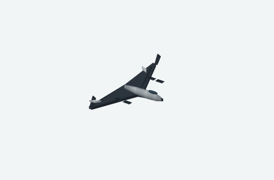
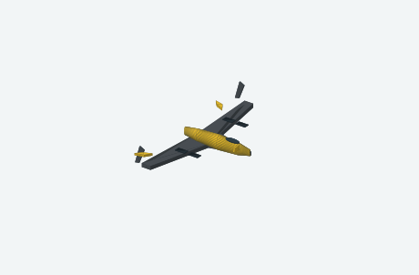
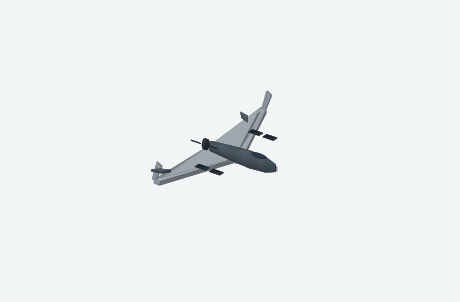
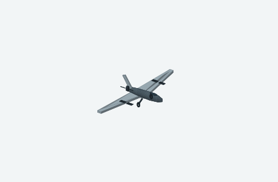
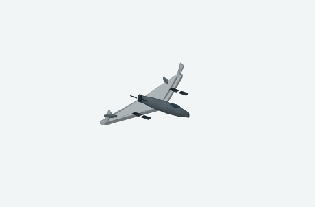
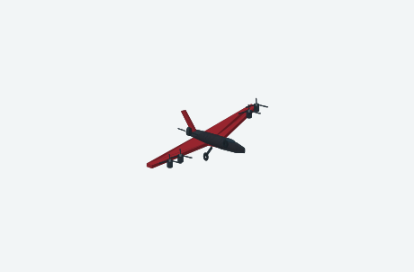
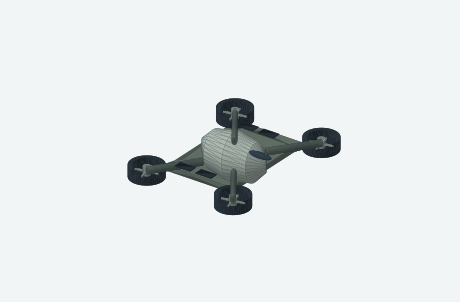
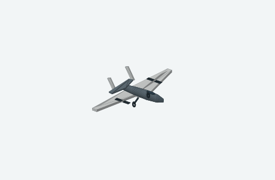

AeroMinD — bibliothèque CAD 3DAEROMIND / JUMEAU NUMÉRIQUE
Maquettes paramétriques CAO en rendu vectoriel, avec références HUD, OBJ, STL et sources OpenSCAD. Toutes les dimensions sont indicatives et non certifiées.

Aile delta furtive

Delta tactique à bande jaune

Delta gris à hélice arrière

Drone MALE à empennage en V

Aile volante argent à propulseur

VTOL hybride rouge

Quadrirotor à conduits annulaires

Cellule à ailes droites · variante non armée